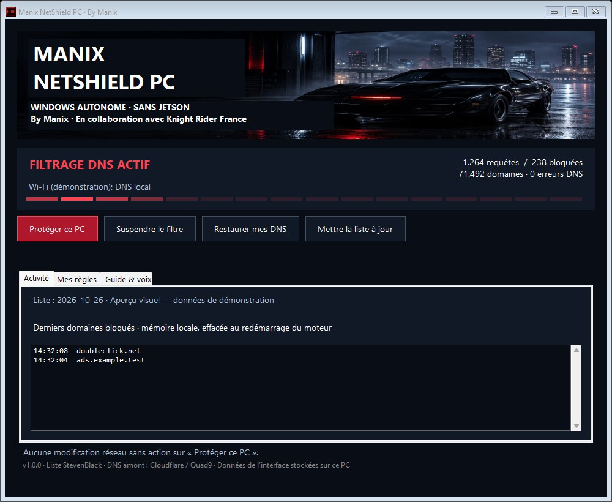

État réel du DNS
Le tableau affiche si les cartes utilisent le moteur local, si la protection est suspendue et si le service répond.
Manix NetShield PC bloque les domaines publicitaires et de suivi directement sur Windows. Installez le logiciel, activez la protection en un clic et suivez son état depuis le tableau de bord KITT.
Quand une application cherche un site, le moteur compare le nom de domaine à la liste et à vos règles, puis répond ou transmet la demande au DNS amont.
Aucun Jetson, serveur Manix ni certificat HTTPS n’est nécessaire. Les requêtes autorisées sont envoyées à Cloudflare, avec Quad9 en secours.
Les actions principales restent visibles ; l’état affiché distingue un moteur prêt d’une protection réellement active sur une carte réseau.
Le tableau affiche si les cartes utilisent le moteur local, si la protection est suspendue et si le service répond.
Compteurs de requêtes, domaines bloqués et derniers blocages visibles dans le tableau de bord.
Autorisez ou bloquez un domaine et ses sous-domaines, puis retirez votre règle quand vous le souhaitez.
La liste est fournie dans l’installateur, puis mise à jour chaque jour. En cas d’échec, la copie précédente reste disponible.
Activez les annonces avec une voix de Windows dans les réglages. Le son est désactivé au départ.
Les DNS initiaux sont sauvegardés. Le tableau de bord permet de les restaurer sans modifier l’adresse IP ni le Wi-Fi.
L’installation n’active pas le filtrage réseau à votre place : vous choisissez quand le PC commence à utiliser son DNS local.
Récupérez le fichier d’installation officiel. Au clic, une voix robotique annonce « Téléchargement en cours. » si votre navigateur prend en charge la synthèse vocale.
Ouvrez l’installateur et acceptez la demande d’administration Windows. Le service, le filtre et le tableau de bord KITT sont installés ensemble.
Dans le tableau de bord, choisissez Protéger ce PC. Les DNS actuels des cartes connectées sont sauvegardés avant activation.
Vérifiez que votre carte indique DNS local. Rechargez la page : les caches ou connexions déjà ouverts du navigateur peuvent persister.
Essayez le message exact avant de télécharger. Cet aperçu ne lance aucun téléchargement.
La voix française de votre navigateur sera utilisée si elle est disponible.Quand le tableau de bord indique « DNS local », ouvrez PowerShell et lancez cette vérification. Elle envoie une requête au moteur local, sans modifier vos réglages réseau.
Resolve-DnsName doubleclick.net -Type A -Server 127.0.0.1Pour un domaine bloqué, la réponse attendue est 0.0.0.0.
L’animation de l’icône suit le fonctionnement du moteur. Ouvrez le tableau de bord depuis la zone de notification pour suspendre, reprendre, ajouter une règle ou restaurer vos DNS.
Choisissez un scénario et observez la réponse du filtre. C’est une démonstration fictive : elle ne contacte ni ne configure votre ordinateur.
Les domaines de la liste sont bloqués. Le DNS du PC n’est pas lu.
doubleclick.netBloqué → 0.0.0.0kitt-franco-belge.beAutorisé → DNS amontCompteurs fictifs : 124 requêtes · 18 blocages. Cette animation ne modifie aucun réglage Windows.
Vérifiez le format d’un domaine et copiez-le ensuite dans l’onglet « Mes règles » de l’application.
Saisissez un domaine pour voir l’aperçu de la règle.
—Non. Cette édition installe le filtre sur Windows 11 64 bits. L’édition réseau AGX est un autre produit, toujours disponible depuis la page de présentation.
Non. Après installation, cliquez sur « Protéger ce PC » et acceptez l’action administrateur. Vérifiez ensuite la mention « DNS local » sur votre carte.
Non. L’activation ajuste uniquement les DNS des cartes physiques connectées. Elle sauvegarde les réglages existants ; elle ne change ni l’adresse IP, ni la passerelle, ni le mot de passe Wi-Fi.
Non. Une liste DNS bloque des domaines connus. Les annonces intégrées au domaine du contenu peuvent rester visibles. Certains navigateurs, VPN et DNS sécurisés peuvent aussi contourner le filtre.
« Suspendre le filtre » laisse passer les domaines sans restaurer la configuration. « Restaurer mes DNS » remet les réglages sauvegardés. La désinstallation demande la restauration avant de retirer le service.
Cette préversion n’est pas signée avec un certificat commercial. Vérifiez que le téléchargement provient bien du lien officiel et comparez son empreinte SHA-256. Ne désactivez pas la protection Windows.
La page utilise la voix française disponible dans votre navigateur, à une tonalité plus grave pour un effet robotique. Si la synthèse vocale n’est pas prise en charge ou si la voix française manque, le téléchargement démarre quand même et un message reste affiché.
Le moteur DNS et les règles passent des essais isolés. La restauration a été exercée sur des cartes simulées. L’installation administrateur complète et l’activation sur une vraie carte restent à valider sur un PC de test. L’installateur est compilé et son code source est joint au téléchargement.
d69a8160114914c08de1fe9c37406e93c89331984057b166d8d60c62e8c4d456Empreintes et autres fichiers → · Code source → · Notes de version →
Le téléchargement PC fonctionne tout seul. L’édition réseau utilise l’AGX comme filtre pour les appareils raccordés à ce réseau.
Le moteur tourne sur cet ordinateur. Aucun AGX n’est requis.
Télécharger l’édition PC ↑Le Jetson filtre les appareils connectés à son port LAN. Cette installation comprend son compagnon Windows.
Voir les téléchargements AGX →L’installateur, le moteur et la liste de départ sont réunis dans un seul fichier.
Préversion 1.0.0 · Windows 11 64 bits · SHA-256 disponible ci-dessus